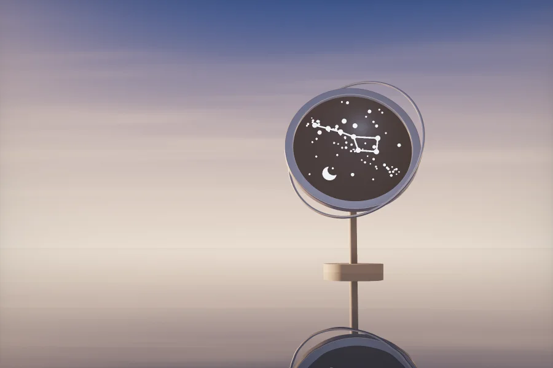

product · about 3 min · The Product Archipelago
Your Sky
The night sky over any place, at any moment, as a poster: the stars, the Milky Way, the planets where they were and the Moon in its real phase, ready to print.
The problem
A star map of the night you met is a favourite gift, but the shops that sell one charge for it and keep the file.
Evidence
60 unit tests check the sky against facts: Polaris as high as the latitude, the solstice noon Sun, a sidereal day, real full and new moons, clocks skipped and doubled. 12 end-to-end scenarios on a desktop and a phone. Read its tests

What it does
- The real sky over any place at any moment from 1800 to 2200, with the Moon in its phase and the planets where they were
- Clock time at the place, not on your computer, with summer time and the history of every zone
- A slider through the night, shaded with the real twilight, and a button that plays the stars round
The most interesting decision
Turn the sky with one rotation, and look the Milky Way up rather than fill it
The stars are stored once, as directions; a single rotation from Astronomy Engine turns all 5,044 of them to any moment, so playing the night costs about 11 ms a frame. The Milky Way outline circles the whole sky, which is awkward to fill on a sphere, so it is filled once on a flat map of the sky at build time and every pixel of the chart looks itself up.
Built with
- React 19 + TypeScript (strict)
- Vite
- Astronomy Engine: precession, nutation, the Moon and planets
- Stereographic projection
- Canvas + SVG from one scene
- Vitest + Playwright + axe